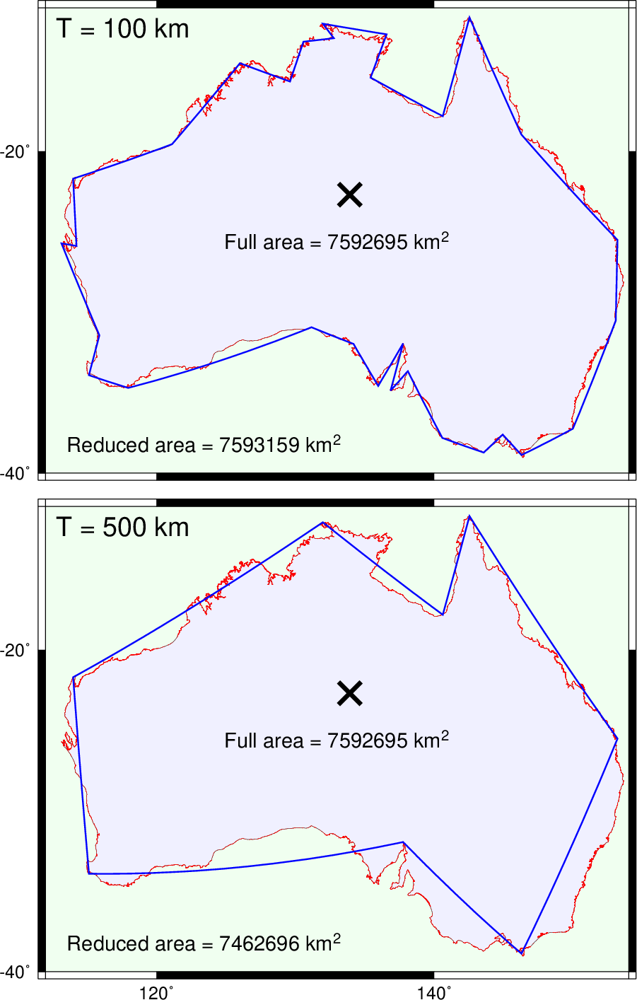

(40) Line simplification¶
This example demonstrate the Douglas-Peucker line simplification algorithm as implemented in the tool gmtsimplify. We show the full resolution coastline of Australia and two much simplified versions using two different thresholds.
#!/bin/bash
# GMT EXAMPLE 40
# $Id$
#
# Purpose: Illustrate line simplification and area calculations
# GMT modules: psbasemap, pstext, psxy, gmtsimplify, gmtspatial
# Unix progs: awk, rm
#
ps=example_40.ps
gmt spatial GSHHS_h_Australia.txt -fg -Qk > centroid.txt
gmt psbasemap -R112/154/-40/-10 -JM5.5i -P -K -B20 -BWSne+g240/255/240 -Xc > $ps
gmt psxy GSHHS_h_Australia.txt -R -J -O -Wfaint -G240/240/255 -K >> $ps
gmt psxy GSHHS_h_Australia.txt -R -J -O -Sc0.01c -Gred -K >> $ps
gmt simplify GSHHS_h_Australia.txt -T500k > T500k.txt
gmt spatial GSHHS_h_Australia.txt -fg -Qk | $AWK '{printf "Full area = %.0f km@+2@+\n", $3}' > area.txt
gmt spatial T500k.txt -fg -Qk | $AWK '{printf "Reduced area = %.0f km@+2@+\n", $3}' > area_T500k.txt
gmt psxy -R -J -O -K -W1p,blue T500k.txt >> $ps
gmt psxy -R -J -O -K -Sx0.3i -W3p centroid.txt >> $ps
echo T = 500 km | gmt pstext -R -J -O -K -Dj0.1i/0.1i -F+cLT+jTL+f18p >> $ps
gmt pstext -R -J -O -K area.txt -F+f14p+cCM >> $ps
gmt pstext -R -J -O -K area_T500k.txt -F+f14p+cLB -Dj0.2i >> $ps
gmt psbasemap -R -J -O -K -B20+lightgray -BWsne+g240/255/240 -Y4.7i >> $ps
gmt psxy GSHHS_h_Australia.txt -R -J -O -Wfaint -G240/240/255 -K >> $ps
gmt psxy GSHHS_h_Australia.txt -R -J -O -Sc0.01c -Gred -K >> $ps
gmt simplify GSHHS_h_Australia.txt -T100k > T100k.txt
gmt spatial T100k.txt -fg -Qk | $AWK '{printf "Reduced area = %.0f km@+2@+\n", $3}' > area_T100k.txt
gmt psxy -R -J -O -K -W1p,blue T100k.txt >> $ps
gmt psxy -R -J -O -K -Sx0.3i -W3p centroid.txt >> $ps
echo T = 100 km | gmt pstext -R -J -O -K -Dj0.1i/0.1i -F+cLT+jTL+f18p >> $ps
gmt pstext -R -J -O -K area.txt -F+f14p+cCM >> $ps
gmt pstext -R -J -O -K area_T100k.txt -F+f14p+cLB -Dj0.2i >> $ps
gmt psxy -R -J -O -T >> $ps
rm -f centroid.txt area*.txt T*.txt

{kind=link}
Illustrate line simplification and area calculations.